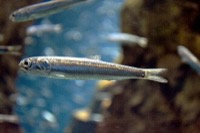

かたくちいわし（片口鰯）の漁獲量 都道府県ランキング
1位から3位までと、とれた量
かたくちいわしが日本でいちばん多くとれるのは千葉県です。1万5,164 tで、全国（10万2,699 t）の15%を占めます。

| 順位 | 都道府県 | 漁獲量 | 全国に占める割合 |
|---|---|---|---|
| 1位 | 千葉県 | 1万5,164 t | 15% |
| 2位 | 広島県 | 1万4,056 t | 14% |
| 3位 | 三重県 | 1万362 t | 10% |
この数字について
- 分類：鰯の仲間
- 全国の漁獲量：10万2,699 t
- この数字が表すもの：漁獲量（海でとった重さ。養殖は含みません）
- 調査：海面漁業生産統計調査（海面漁業） 令和6年
- 32県分を調査（調査していない県は順位に入りません）
かたくちいわしの漁獲量について、よくある質問
- かたくちいわしの漁獲量が日本一の都道府県はどこですか？
- 千葉県です。海面漁業生産統計調査（海面漁業）（令和6年）で1万5,164 tでした。
- かたくちいわしの漁獲量ランキング2位・3位はどこですか？
- 2位は広島県（1万4,056 t）、3位は三重県（1万362 t）です。
- かたくちいわしの全国の漁獲量はどれくらいですか？
- 10万2,699 t（令和6年）です。